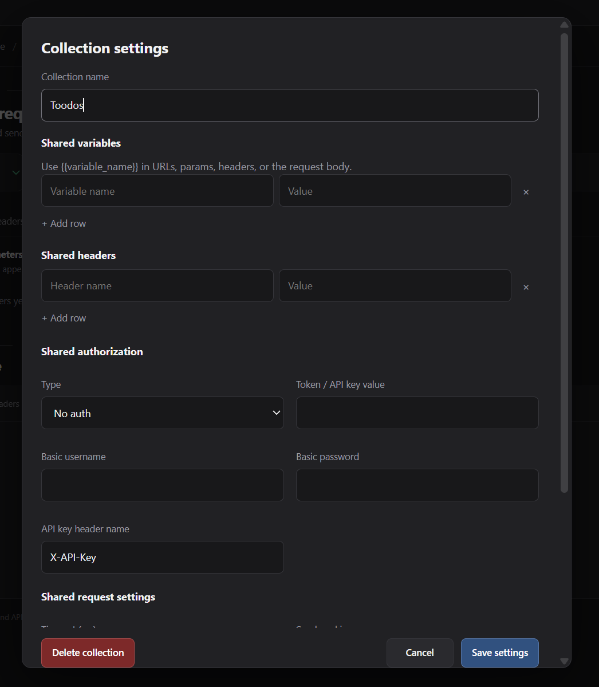

Shared settings
Keep the values your collection uses most often in one place, then let each request override them when needed.
Shared variables
Collection variables let you define reusable values such as {{base_url}}. Use them in the URL, query params, headers and body.
{{base_url}}/users
{{base_url}}/projects/{{project_id}}
X-API-Base: {{base_url}}When you send a request, APIDesk resolves the variable before the request is sent. This makes it easy to keep a testing environment or tenant URL in one place.
Where variables work
- URLUse a variable for the base address or common path segments.
- ParamsBuild query strings with environment-specific values instead of repeating them.
- HeadersInject tenant IDs, API keys and versioning values without retyping them every time.
- BodyReference shared values inside JSON or form data payloads.
Override order
- Global headers are workspace defaults. They apply to every request.
- Collection variables, headers and auth apply to requests inside that collection.
- The request's own value wins. If a request sets the same header, auth field or value directly, it overrides the shared value.
Rule: the request's own value wins. Global headers are a baseline for the whole workspace, while collection settings are shared defaults for that collection.
Shared headers
Use collection headers for values like Accept, X-Client or tenant IDs. They are inherited by all requests in the collection, but a request header with the same name overrides the shared value.
Shared auth
Collection auth is useful when all requests in the same collection use the same API credentials. You can store a bearer token, basic auth or API key once and let every request use it.
If an individual request defines its own authentication value, that request-level value is used instead of the collection default.
Shared request settings
Collection settings can also define default request behavior, including timeout, redirect handling, credentials mode, retry count, retry delay and response size. Each request can override these values locally when the API behavior requires it.
